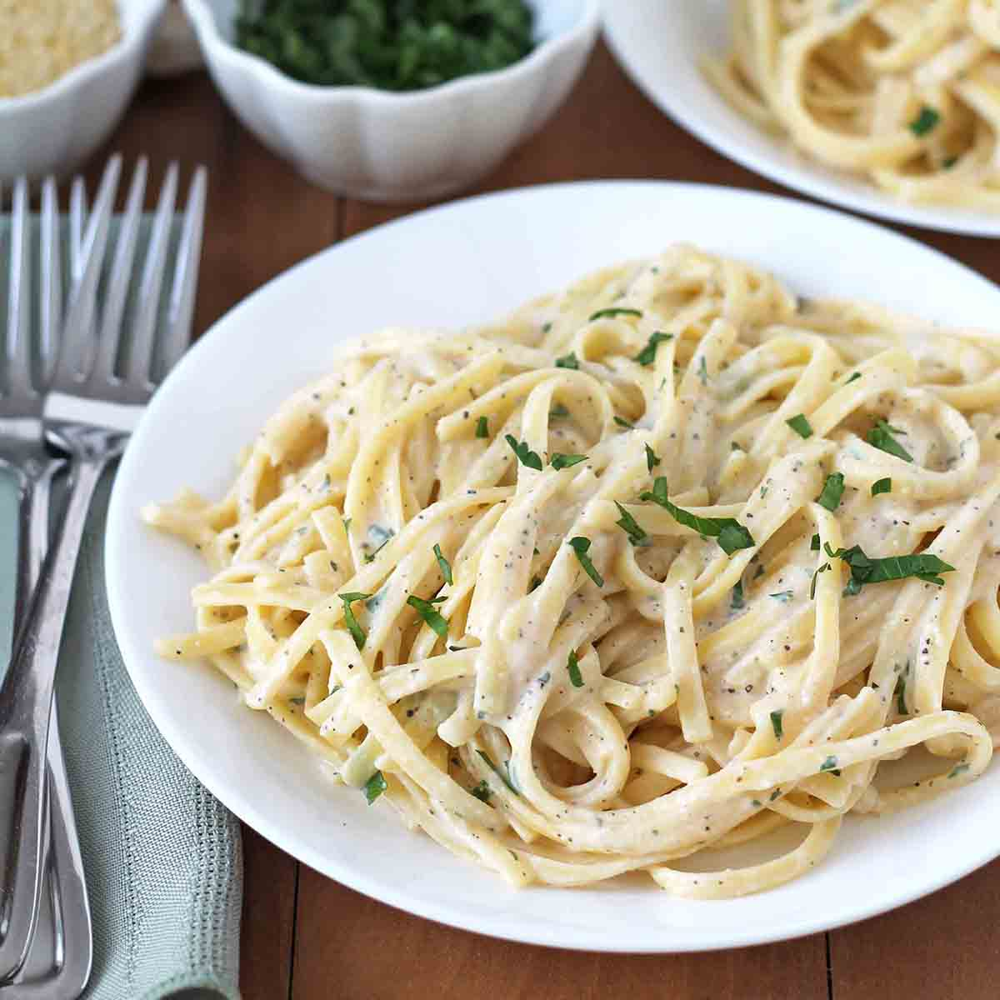

(Click the image to go back to homepage)

Creamy Garlic Pasta
This is a very easy recipe that you can make in less than 30 minutes.
This can be good for days where you just come back home and need a
quick bite, without going out to spend a ton of money on restaurant
pasta. This will pack the same flavor punch!!!
Ingredients
- Heavy Whipped Cream 400ml
- Minced Garlic 3tbsp
- Butter 8tbsp
Steps
- Start with boiling the pasta, following the instructions found on the packaging.